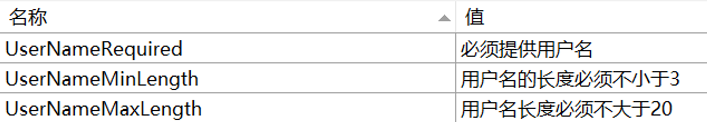

ObservableValidator
ObservableValidator（以下简称为 OV）差不多可以说是工具包的最后一块拼图。它与 ObservableRecipient 类似，都是 ObservableObject 的子类。顾名思义，OV 的作用旨在提供对于数据的验证。它提供了如下几个属性或方法：
HasErrors：一个布尔值，表示当前的 VM 中是否有错误GetErrors：一个方法，用于获取当前 VM 中的所有错误信息ValidateProperty：一个方法，用于验证当前 VM 中的某个属性ValidateAllProperties：一个方法，用于验证当前 VM 中的所有属性
除此之外，OV 还支持 DOTNET 标准库中的许多用于数据验证的特性，比如：
Required：表示当前属性不能为空MinLength：表示当前属性的最小长度MaxLength：表示当前属性的最大长度EmailAddress：表示当前属性必须是一个合法的邮箱地址
这些属性位于 System.ComponentModel.DataAnnotations 命名空间中
这个类的工作原理及数据验证的理念大量借鉴于 ASP.NET Core
基本用法
一个典型的包含数据验证功能的 VM，通常会对应一个表单，比如用户注册信息等。此时，VM 的代码通常形如：
using CommunityToolkit.Mvvm.ComponentModel;
using CommunityToolkit.Mvvm.Input;
using System.ComponentModel.DataAnnotations;
using System.Diagnostics;
partial class RegisterFormViewModel : ObservableValidator
{
[Required] // (4)!
[MinLength(3)]
[MaxLength(20)]
[ObservableProperty]
string _username = string.Empty;
[Required]
[EmailAddress]
[ObservableProperty]
string _email = string.Empty;
[RelayCommand]
void Submit()
{
ValidateAllProperties(); // (1)!
if (HasErrors) // (2)!
{
Debug.WriteLine(
string.Join(
Environment.NewLine,
GetErrors()/* (3)! */.Select(e => e.ErrorMessage)
));
return;
}
Debug.WriteLine("Submit successfully.");
}
}
- 这个方法可以一键判断当前类中的所有需要被验证的属性
- 这个方法可以快速判断当前类中是否存在错误信息
- 这个方法可以获取当前类中所有的错误信息
- 这些属性可以快速为属性添加验证规则
Note
实际运行之后不难发现，对于数据的验证，只发生在调用 ValidateAllProperties 方法之后。这意味着，如果用户在输入框中输入了错误的数据，但是没有点击提交按钮，那么这些错误信息是不会被显示的；一旦点击了提交按钮，此时不仅会进行数据验证，还会在界面上也进行提示（比如文本框的边框会变红）。
Note
如果想要实现实时验证，可以在 setter 中调用 ValidateProperty 方法，或者也可以为字段添加 NotifyDataErrorInfo 特性。后者是基于源生成器的，详见 与字段相关的源生成器特性。
自定义验证
如果 DOTNET 原生的用于数据验证的特性无法满足需求，也就是需要自定义一些更加复杂的验证方式，那么有两种方法：
实现一个返回值为 ValidationResult 类型的方法
这个方法不一定要写在当前的 VM 当中，而是可以写在别的类中，从而使其更加通用。但是这个方法与下面的比，缺乏了一定的定制能力，因为无法像特性那样通过为构造传参来进行相关的配置，所以写在 VM 当中可以一定程度上弥补这个缺陷。
public class RegistrationForm : ObservableValidator
{
private readonly IFancyService service;
public RegistrationForm(IFancyService service)
{
this.service = service;
}
private string name;
[Required]
[MinLength(2)]
[MaxLength(100)]
[CustomValidation(typeof(RegistrationForm), nameof(ValidateName))]
public string Name
{
get => this.name;
set => SetProperty(ref this.name, value, true);
}
public static ValidationResult ValidateName(string name, ValidationContext context)
{
RegistrationForm instance = (RegistrationForm)context.ObjectInstance;
bool isValid = instance.service.Validate(name);
if (isValid)
{
return ValidationResult.Success;
}
return new("The name was not validated by the fancy service");
}
}
实现一个继承了 ValidationAttribute 的类
ValidationAttribute 是一个 .NET 原生的抽象类。上面提到的一些常用的特性，比如 Required、MinLength 等，都是继承了这个类。实现一个继承了这个类的子类，就可以更加灵活地进行数据验证，因为可以通过构造函数传参来进行相关的配置。比如：
public sealed class GreaterThanAttribute : ValidationAttribute
{
public GreaterThanAttribute(string propertyName)
{
PropertyName = propertyName;
}
public string PropertyName { get; }
protected override ValidationResult IsValid(object value, ValidationContext validationContext)
{
object
instance = validationContext.ObjectInstance,
otherValue = instance.GetType().GetProperty(PropertyName).GetValue(instance);
if (((IComparable)value).CompareTo(otherValue) > 0)
{
return ValidationResult.Success;
}
return new("The current value is smaller than the other one");
}
}
Note
注意到 IsValid 方法会传入一个 ValidationContext 类型的参数，这个参数包含了当前的实例对象，所以可以通过这个对象来获取到当前实例对象的其他属性的值。在上面的例子中，就是通过这个上下文获取到了 VM 对象，进而使用反射获取到了另外一个属性的值，从而进行比较。
使用方法如下：
public class ComparableModel : ObservableValidator
{
private int a;
[Range(10, 100)]
[GreaterThan(nameof(B))]
public int A
{
get => this.a;
set => SetProperty(ref this.a, value, true);
}
private int b;
[Range(20, 80)]
public int B
{
get => this.b;
set
{
SetProperty(ref this.b, value, true);
ValidateProperty(A, nameof(A));
}
}
}
本地化错误消息
借助原生的特性，我们可以很轻易地获得有价值的错误信息。但是这些错误信息是英文的，而且内容或许并不适合直接展示给用户。如果需要定制错误信息，那么 ValidationAttribute 有一个 ErrorMessage 属性，可以通过这个属性来进行定制。例如：
[Required(ErrorMessage = "The name is required")]
[MinLength(2, ErrorMessage = "The name must be at least 2 characters long")]
[MaxLength(100, ErrorMessage = "The name must be at most 100 characters long")]
public string Name
{
get => this.name;
set => SetProperty(ref this.name, value, true);
}
如果希望实现本地化，那么原生也支持借助 .resx 文件的方式对于本地化文本进行管理。
假如我们现在有一个 Resources.resx 文件，以及一个 Resources.zh-CN.resx 文件。里面分别包含了如下的内容（图中展示了一些错误信息的键值，以及在 zh-CN 文件中的中文翻译）：

然后我们就可以通过如下的方式来实现本地化：
[Required(ErrorMessageResourceName = "UserNameRequired", ErrorMessageResourceType = typeof(Resources))]
[MinLength(3, ErrorMessageResourceName = "UserNameMinLength", ErrorMessageResourceType = typeof(Resources))]
[MaxLength(20, ErrorMessageResourceName = "UserNameMaxLength", ErrorMessageResourceType = typeof(Resources))]
[ObservableProperty]
string _username = string.Empty;
此时只要我们设置了正确的 CultureInfo，那么错误信息就会自动切换为对应的语言。设置方式如下：
CultureInfo.CurrentCulture = new CultureInfo("zh-CN");
CultureInfo.CurrentUICulture = new CultureInfo("zh-CN");
使用 Avalonia UI 时需要注意的地方
Avalonia UI 对于校验功能有一套自己的 BindingPlugins 机制，并内置了一些 DataValidator，用来提供数据校验功能。具体来说，一个默认的项目会包含如下几个 Plugin：

可以看到，第一个插件就是 DataAnnotationsValidationPlugin，它会自动扫描视图模型中的数据注解特性，并进行相应的校验。
但不太妙的是，这与我们工具包的 ObservableValidator 的实现方式“不谋而合”，或者说重复了。因此，如果我们要在一个 Avalonia UI 项目中使用 ObservableValidator，就需要注意避免与内置的校验机制产生冲突。
具体做法为，我们可以将 Avalonia 自带的这个与 DataAnnotations 相关的插件给移除。比如，我们可以在 App.axaml.cs 中这样做：
public override void OnFrameworkInitializationCompleted()
{
if (ApplicationLifetime is IClassicDesktopStyleApplicationLifetime desktop)
{
DisableAvaloniaDataAnnotationValidation();
desktop.MainWindow = new MainWindow
{
DataContext = new MainWindowViewModel(),
};
}
base.OnFrameworkInitializationCompleted();
}
private void DisableAvaloniaDataAnnotationValidation()
{
var dataValidationPluginsToRemove =
BindingPlugins.DataValidators.OfType<DataAnnotationsValidationPlugin>().ToArray();
foreach (var plugin in dataValidationPluginsToRemove)
{
BindingPlugins.DataValidators.Remove(plugin);
}
}
Note
简单起见，我们还可以将上面的 DisableAvaloniaDataAnnotationValidation 简单写成 BindingPlugins.DataValidators.RemoveAt(0)，因为它总是在第一个。当然这看起来可能有些“魔法”，但至少目前来说，是可行且有效的。
上面的方式其实也是使用 Avalonia 官方的模板搭配工具包实现 MVVM 时生成的默认代码。在安装了 Avalonia UI 相关的模板后，可以用下面的控制台指令进行创建：
dotnet new avalonia.mvvm -m CommunityToolkit
然后就可以在 App.axaml.cs 中看到上面的逻辑了。